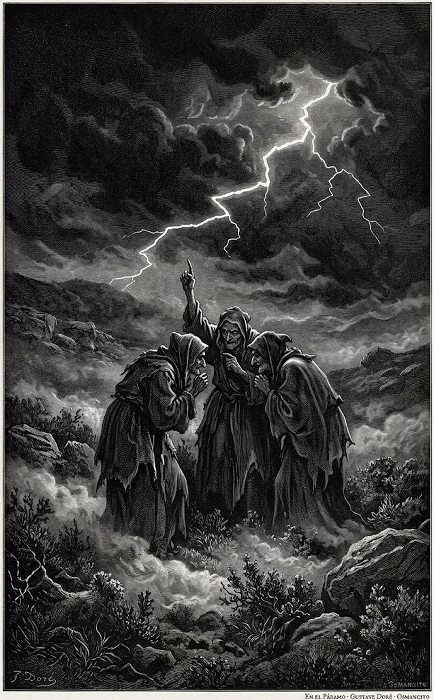
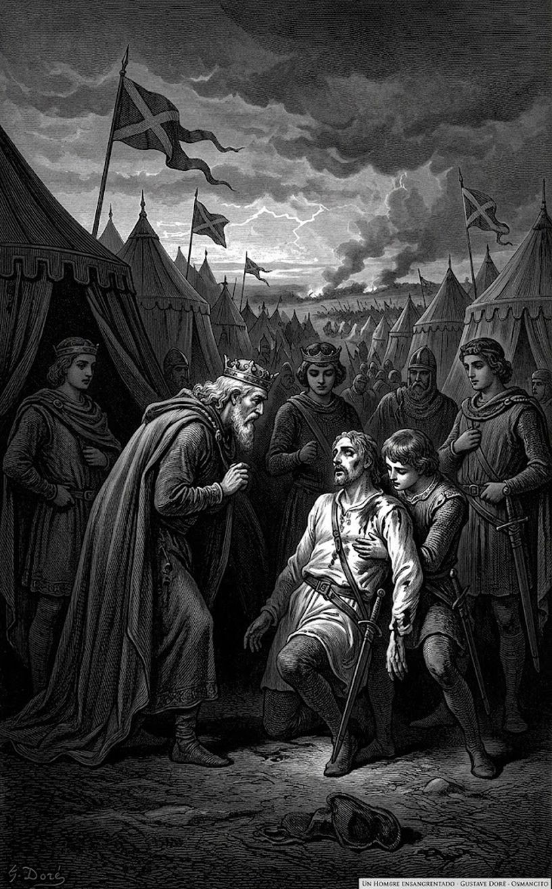

9 de octubre de 2026
Macbeth

William Shakespeare
Macbeth, el mejor general del rey Duncan, oye de tres brujas que será rey de Escocia, y la profecía le prende la ambición: empujado por su esposa, asesina al rey bajo su propio techo y ocupa el trono; de ahí en adelante solo puede sostenerlo con más crímenes, entre la culpa y el miedo, hasta que la misma profecía se cumple al revés. Es la tragedia más breve de Shakespeare y una de las más oscuras.
Este destilado se lee en unas dos páginas y crece escena a escena.
Acto I, escena 1

Trueno y relámpago. Tres brujas se citan para cuando acabe la batalla: «¿Cuándo volveremos a encontrarnos las tres?», pregunta la primera, y esa es la primera frase de la obra. Ya tienen el dónde (el páramo) y les falta decir con quién:
There to meet with Macbeth.
Allí, a encontrarnos con Macbeth.
Tercera bruja
Es la primera vez que suena el nombre de Macbeth, y suena en boca de una bruja. Las llaman sus espíritus (un gato, un sapo) y se van entre la niebla, cantando el mundo al revés:
Fair is foul, and foul is fair: Hover through the fog and filthy air.
Lo bello es feo, y lo feo es bello: volemos entre la niebla y el aire inmundo.
Las tres
Acto I, escena 2

El rey Duncan, acampado junto a la batalla, ve llegar a un capitán herido: «¿Quién es ese hombre ensangrentado?», la primera frase de la escena. Por su estado, dice el rey, podrá dar las últimas noticias de la rebelión. El capitán empieza: la cosa estaba pareja, el rebelde Macdonwald recibía refuerzos de las islas, pero Macbeth lo abrió del ombligo a las quijadas y clavó su cabeza en las almenas. El rey lo oye maravillado:
So well thy words become thee as thy wounds: They smack of honour both.
Tus palabras te sientan tan bien como tus heridas: ambas saben a honor.
Duncan
Apenas contada esa hazaña, el capitán trae la mala: ganada la primera pelea, vino otra:
Mark, King of Scotland, mark: No sooner justice had, with valour arm’d, Compell’d these skipping kerns to trust their heels, But the Norweyan lord, surveying vantage, With furbish’d arms and new supplies of men, Began a fresh assault.
Atienda, rey de Escocia, atienda. Apenas la justicia, armada de valor, obligó a esos kernos saltarines a fiar en sus talones, el señor noruego, viendo su ocasión, con armas bruñidas y nuevos refuerzos de hombres, lanzó un nuevo asalto.
Capitán
¿Se acobardaron Macbeth y Banquo? Al contrario, dice el capitán: como cañones cargados al doble. Entra Ross con la prisa en los ojos («Así ha de mirar quien viene a contar cosas extrañas», anota Lennox) y confirma la victoria: Noruega pide la paz y pagará diez mil dólares por enterrar a sus muertos. Queda el thane de Cawdor, el señor que resultó traidor, y de él se ocupa el rey:
No more that Thane of Cawdor shall deceive Our bosom interest.
Ese thane de Cawdor no volverá a engañar nuestra más íntima confianza.
Duncan
Sentenciado el traidor, su título viaja hacia Macbeth sin que él lo sepa todavía: «Lo que él ha perdido, el noble Macbeth lo ha ganado». Es la última frase de la escena, y suena a profecía.
Osmancito, con la asistencia de Instinct